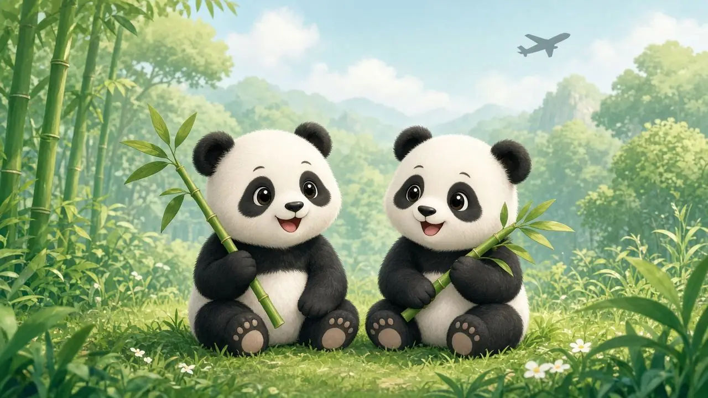
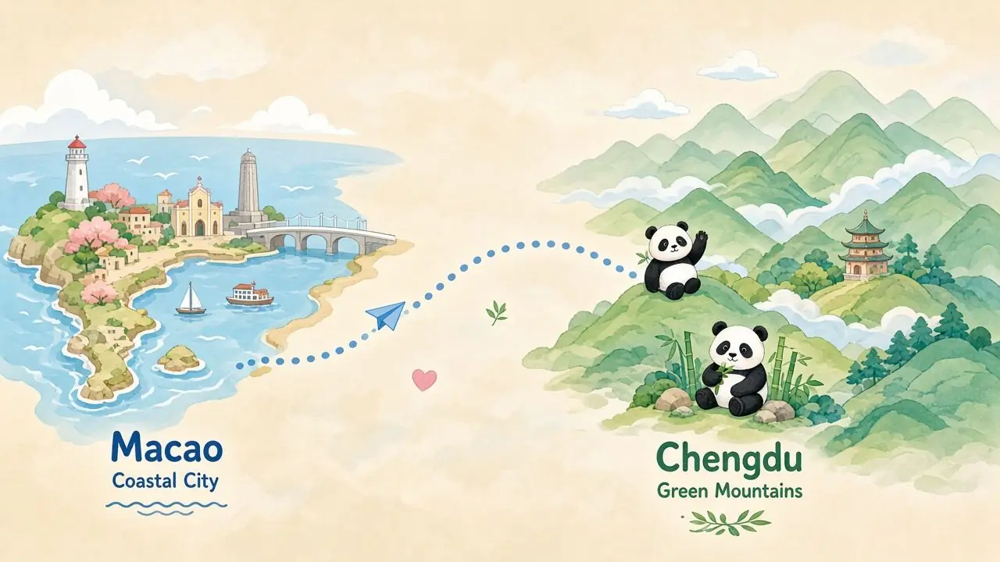
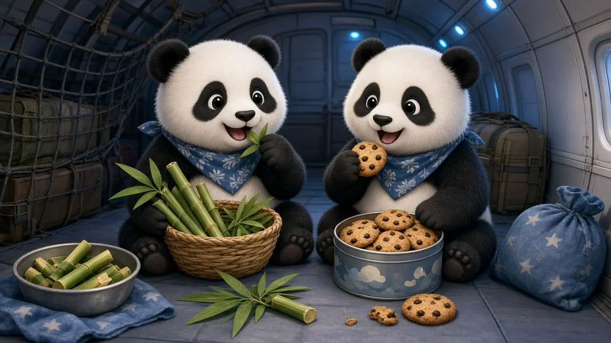
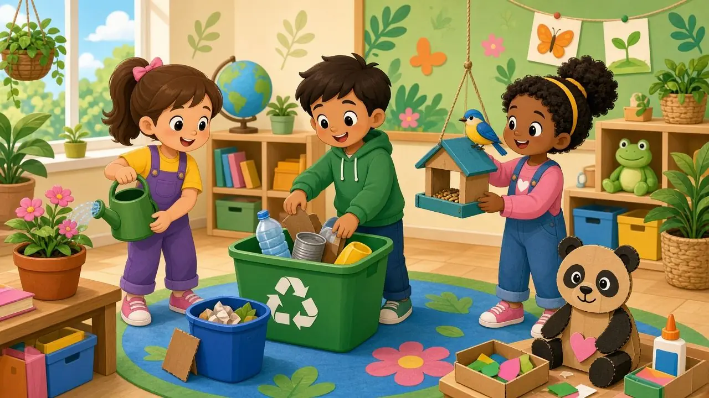

二年级道德与法治 · 新闻播报
健健 · 康康
一对大熊猫兄弟的成长新旅程
2026年11月8日 · 从澳门到成都
【约25秒】各位同学好！今天的新闻播报，我们只讲一件特别暖心的事：大熊猫兄弟健健和康康，平安到达了成都。准备好了吗？我们一起看看它们的故事！

新闻 · 2026年11月8日
发生了什么？
大熊猫双胞胎「健健」和「康康」，坐专机从澳门飞到四川成都，身体很健康，平安到达。
一句话：两只圆滚滚的国宝，搬家去成都继续长大、学习。
【约35秒】先说新闻本身：11月8日，健健和康康从澳门坐专机飞到成都，检查后身体很好，平安抵达。它们不是去旅游，是去成都大熊猫基地开始新的学习成长之旅。

故事时间线
它们的旅程
2016
澳门出生
首对在澳门出生的大熊猫双胞胎
十年
濠江陪伴
在澳门生活约十年，市民的「开心果」
11月8日
专机启程
竹子饼干当飞机餐，专家全程护送
成都
新家园
先隔离检疫，再入住「星云馆」
【约50秒】它们2016年6月26日在澳门出生，是首对在澳门出生的大熊猫双胞胎。在澳门生活了大约十年。长大成年后，经中央政府和澳门特区政府同意，11月8日坐专机去成都学习成长。飞机上有竹子和饼干当「飞机餐」，澳门和成都的专家一起护送。

细节亮点
启程那天
早上约8点：坐上空调运输车
车厢保持 15～20℃，很舒服
机场有二十多名小学生送行
中午约12:15 专机起飞
【约40秒】启程那天特别细心：早上大约8点，饲养员引导它们进特制笼子，坐空调车去机场，车厢温度保持15到20摄氏度。10点举行启程礼，二十多名小学生来送祝福。中午大约12点15分专机起飞。它们提前做了一个月隔离检疫，还练过摇晃和声响，好适应坐飞机。
大熊猫小知识
为什么去成都？
它们已经10岁，步入成年。去成都大熊猫繁育研究基地，是为了学习适应更丰富的自然环境，促进身心全面发展。
新家：隔离检疫至少一个月后，入住升级的「星云馆」——像自然森林一样的家园。
【约45秒】为什么要走？因为它们满10岁，长大成年了，需要下一阶段的成长：学习环境适应技能，体验更丰富的自然生活。爸爸妈妈「开开」「心心」是中央政府2015年赠送给澳门的；健健康康在澳门出生。现在它们去成都基地，检疫后会住进「星云馆」。馆里模拟自然栖息环境，还融入了澳门文化元素。
情谊
大熊猫与
祖国的心意
开心家族
开开 · 心心
中央赠澳，父母来自成都
征名祝福
健健 · 康康
名字向市民公开征集
两地合作
澳门 ↔ 成都
十年照料，一起守护国宝
【约40秒】大熊猫也连着祖国的心意：2015年中央把开开、心心赠送给澳门；2016年它们在澳门生下双胞胎，名字向市民征集，叫健健、康康，希望大家健健康康。十年来澳门和成都的饲养团队一起照料。这次启程，也是两地保育合作的新一步。有小学生去机场送行，说明小朋友也能表达友善和祝福。

我们可以学到什么
爱护动物
国宝需要细心照料
不惊吓 · 不投食
不惊吓 · 不投食
保护生态
竹林家园要守护
垃圾分类 · 爱护自然
垃圾分类 · 爱护自然
1对人友善，会送祝福
2爱护小动物和小植物
3不乱扔垃圾，保护家园
4认真了解国宝故事
健健康康 · 开开心心 · 爱护生命
【约50秒】联系道法课：爱护动物——工作人员细心护送，我们看熊猫也不惊吓、不乱投食；保护生态——熊猫需要竹林和干净家园；友善——小学生去送行，我们也能对人友善、会祝福别人；我能做什么——爱护身边小动物和小植物，垃圾分类，认真听国宝的故事。记住：健健康康、开开心心、爱护生命！
提问闯关
全部通关！
点击选项作答
【约70秒】现在提问闯关！一共4关，请同学举手回答。答对解锁下一关；答错看提示再试。（点选项，再点「解锁下一关」。全部通关后按 →）
小游戏 · 把行动放进篮子
0 / 6
把下面的做法，拖到正确的篮子里
【约45秒】小游戏：把做法拖进正确的篮子——爱护动物、保护生态、友善祝福。请两位同学上来拖一拖。放错会弹回来，全对就庆祝！
祝健健 · 康康 学习顺利 · 健康快乐
我们也会爱护生命
爱护动物 · 保护家园 · 对人友善 —— 谢谢大家！
【约20秒】健健和康康去成都继续长大学习。我们也要爱护动物、保护家园、对人友善。祝它们健健康康、开开心心！今天的新闻播报到这里，谢谢大家！